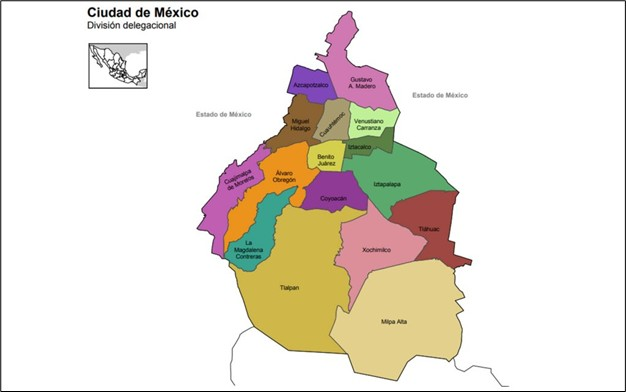
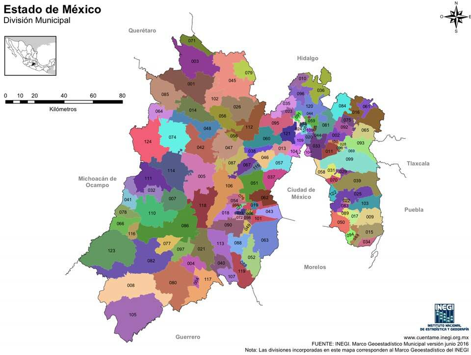

Bienvenido al Sistema de Pronóstico Hidrométrico
Este sistema permite consultar el nivel de riesgo de inundación y sequía
en la Ciudad de México y el Estado de México, a partir de los datos meteorológicos proporcionados por
CONAGUA.
Selecciona una de las opciones del menú para visualizar las predicciones detalladas.
Proyecto académico desarrollado para fines educativos.
Ciudad de México (CDMX)
Cargando datos...
Patrones Climáticos:
Estado de México (EDOMEX)
Cargando datos...
Patrones Climáticos:
¿Cómo se creó este proyecto?
Herramientas Utilizadas:
- Python 3.13
- FastAPI (para crear la API)
- Uvicorn (servidor para la API)
- Pandas (análisis de datos)
- Visual Studio Code
- HTML, CSS y JavaScript (para la interfaz web)
Funcionamiento General:
- El usuario selecciona CDMX o EDOMEX desde la página web.
- La página hace una consulta HTTP a la API local de FastAPI.
- FastAPI lee los archivos de datos (CONAGUA) con Pandas.
- Calcula el riesgo de inundación y sequía.
- Regresa los resultados a la web y los muestra al usuario.
Estructura del Proyecto:
- Carpeta web:
- index.html (página principal)
- mapa_cdmx.png
- mapa_edomex.png
- main.py (backend con FastAPI)
- Archivos CSV de CONAGUA para CDMX y EDOMEX
Propósito:
Este proyecto tiene fines educativos y sirve como demostración de cómo integrar datos meteorológicos con predicciones simples a través de una interfaz web conectada a un backend Python.